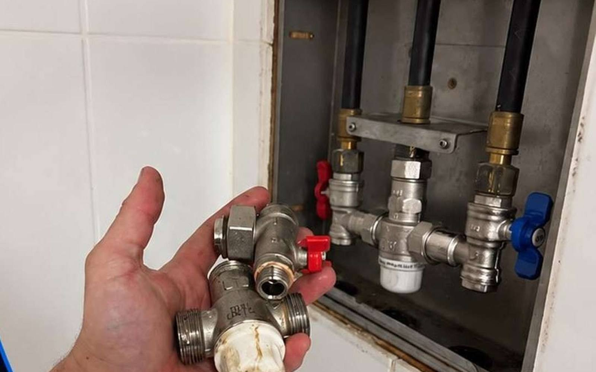

Blocked Drains
Jetting & cameras
Melbourne Plumbing Services
Blocked drains, leaking taps & repairs, hot water systems, bathroom & kitchen plumbing, new installations — licensed, insured, local to Melbourne.

Jetting & cameras
Install & service
Renovation plumbing
New builds & upgrades
01
Clearing blocked sinks, toilets, stormwater and sewer lines with jetters and cameras.
02
Dripping taps, leaking pipes, burst flexis and valve replacements - fixed clean.
03
Supply, install and service storage, continuous flow and heat pump units - all brands.
04
Renovation rough-in, fixture fit-off, waterproofing coordination and final commissioning.
05
New builds, extensions and upgrades - gas, water, drainage to AS/NZS 3500.
// PRESSURE GAUGE - system test at 500 kPa
We prioritise emergency calls - water damage waits for no one. Request a quote and we'll triage fast.
Tell us a few details and we'll get back to you with a free, no-obligation quote.
Prefer to talk? Use the form - we reply fast.